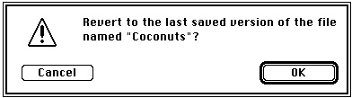

Reverting to a Saved File
Many applications that manipulate files provide a menu command that allows the user to revert to the last saved version of a document. The technique for handling this command is relatively simple. First you should display a dialog box asking whether to revert to the last saved version of the file, as illustrated in Figure 1-11.Figure 1-11 A Revert to Saved dialog box

If the user clicks the Cancel button, nothing should happen to the current document. If, however, the user confirms the menu command by clicking OK, you just need to call
DoReadFileto read the disk version of the file back into the window. Listing 1-14 illustrates how to implement a Revert to Saved menu command.Listing 1-14 Handling the Revert to Saved menu command
FUNCTION DoRevertCmd: OSErr; VAR myWindow: WindowPtr; {window for file data} myData: MyDocRecHnd; {handle to window data} myFile: Integer; {file reference number} myName: Str255; {file's name} myDialog: DialogPtr; {pointer to modal dialog box} myItem: Integer; {item selected in modal dialog} myPort: GrafPtr; {the original graphics port} CONST kRevertDialog = 128; {resource ID of Revert to Saved dialog} BEGIN myWindow := FrontWindow; {get pointer to front window} {get handle to window's data record} myData := MyDocRecHnd(GetWRefCon(myWindow)); GetWTitle(myWindow, myName); {get file's name} ParamText(myName, '', '', ''); myDialog := GetNewDialog(kRevertDialog, NIL, WindowPtr(-1)); GetPort(myPort); SetPort(myDialog); REPEAT ModalDialog(NIL, myItem); UNTIL (myItem = iOK) OR (myItem = iCancel); DisposeDialog(myDialog); SetPort(myPort); {restore previous grafPort} IF myItem = iOK THEN DoRevertCmd := DoReadFile(myWindow); ELSE DoRevertCmd := noErr; END;TheDoRevertCmdfunction retrieves the document record handle from the frontmost window's reference constant field and then gets the window's title (which is also the name of the file) and inserts it into a modal dialog box.If the user clicks the OK button,
DoRevertCmdcalls theDoReadFilefunction to read the data from the file into the window. Otherwise,DoRevertCmdsimply exits without changing the data in the window.